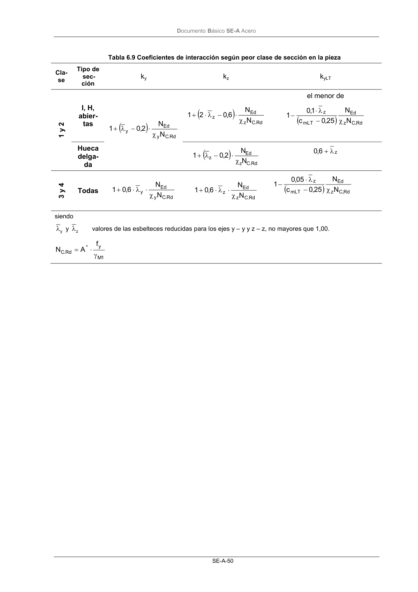

DB-SE-A Acero · edición 2007-10-23 · capa oficial
Documento DB-SE-A-oficial · SHA-256 del PDF 9ed9ea694aabfbda3bfbbef40dfe9223fde05d13c35bc2ba9751e5a96a22a64f
Página física 52 de 168.
Copia fiel del PDF fuente · Fuente oficial
Ficha de la disposición en la fuente oficial
Formato: Texto de la página (Markdown)
Documento Básico SE-A Acero SE-A-50 Tabla 6.9 Coeficientes de interacción según peor clase de sección en la pieza Cla- se Tipo de sec- ción ky kz kyLT I, H, abier- tas ( ) Rd . C z Ed z N N 6,0 2 1 χ ⋅ − λ ⋅ + el menor de ( ) Rd , C z Ed mLT z N N 25 ,0 c 1,0 1 χ − λ ⋅ − 1 y 2 Hueca delga- da ( ) Rd . C y Ed y N N 2,0 1 χ ⋅ − λ + ( ) Rd . C z Ed z N N 2,0 1 χ ⋅ − λ + z 6,0 λ + 3 y 4 Todas Rd . C y Ed y N N 6,0 1 χ ⋅ λ ⋅ + Rd . C z Ed z N N 6,0 1 χ ⋅ λ ⋅ + ( ) Rd , C z Ed mLT z N N 25 ,0 c 05 ,0 1 χ − λ ⋅ − siendo y λ y z λ valores de las esbelteces reducidas para los ejes y – y y z – z, no mayores que 1,00. 1 M y * Rd . C f A N γ ⋅ =
